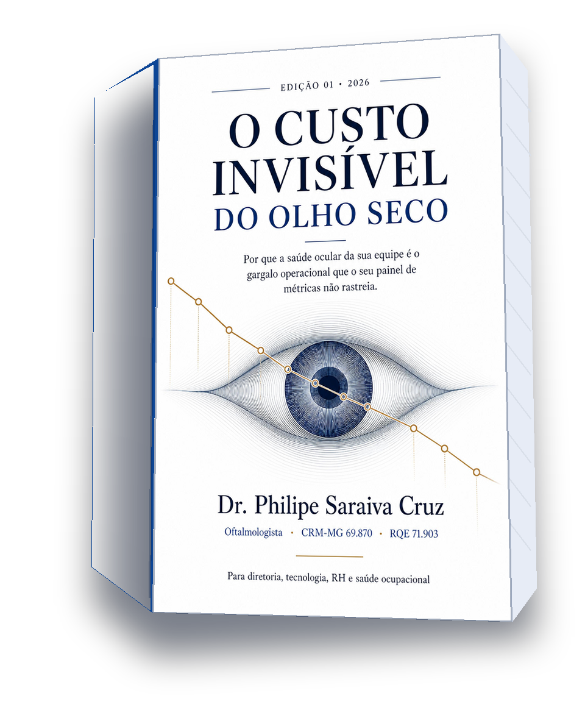

E-book
Amazon Kindle, Apple Books e Google Play Livros.
Um único preço-base digital reduz confusão entre lojas.
Infraestrutura de decisão · edição v2.9.31
Para saúde ocupacional, RH, ergonomia e SESMT em organizações intensivas em telas: um método para separar sintomas, capacidade, operação e caixa — e decidir se vale encerrar, ajustar ou avançar sem fabricar ROI.

Por que "invisível"
O olho seco raramente aparece como uma linha no orçamento. Ele se dilui em microinterrupções, correções e desconforto que ninguém contabiliza. Role e observe o filme se desestabilizar.
Ardência, embaçamento intermitente, pausas para "descansar a vista". Nenhum desses eventos chega ao controle de custos, mas todos consomem atenção durante o trabalho de tela.
O que se pode estimar com honestidade é capacidade equivalente — não um ROI. Quanto de esforço qualificado atravessa a instabilidade sem que ninguém a nomeie.
Entre a hipótese e qualquer decisão financeira existem gates: governança, dados, desenho e critérios de parada. Pular um deles fabrica causalidade — exatamente o que o método recusa.
A primeira fase é desenhada para admitir "não valeu a pena". Um método que não pode falhar não está medindo nada.
Formatos, canais e preços de referência
Sujeitos à validação do custo de impressão e à aprovação final em cada plataforma.
Amazon Kindle, Apple Books e Google Play Livros.
Um único preço-base digital reduz confusão entre lojas.
Amazon KDP e Clube de Autores.
Preço condicionado ao custo unitário e à margem efetiva exibida pelas plataformas.
Amazon KDP e Clube de Autores, caso a prova física confirme valor visual e viabilidade.
Quem conduz cada decisão
Saúde ocupacional, SESMT, ergonomia ou People/RH organiza a pergunta, os papéis e a via de cuidado.
CFO ou controladoria exige custo cotado, horizonte, critérios de parada e benefício observado antes de avaliar ROI.
Jurídico/DPO, saúde ocupacional e revisão metodológica validam dados, licenças, desenho e limites.
Três caminhos, sem mistura de papéis
Conheça tese, método, limites e ferramentas antes de decidir pela compra.
Abrir amostraUse o kit para formular a pergunta sem prometer resposta.
Acessar materiaisRevise governança, dados, licença, capacidade e critérios de parada sem coletar dados de saúde.
Iniciar avaliaçãoCalculadora de capacidade e limiar
Esta simulação mostra a capacidade equivalente sob premissas e, quando há custo cotado, a fração que precisaria aparecer como benefício financeiro incremental e atribuível para cobrir esse custo.
Capacidade equivalente = N × custo direto × fração sintomática × limitação percebida. Limiar = custo cotado ÷ capacidade equivalente. Nenhuma dessas fórmulas prova benefício ou atribuição.
Escuta editorial
Responda às entrevistas pré-leitura e pós-leitura com o mesmo código. São oito perguntas em cada etapa, com alternativas orientadoras e espaço para escrever com suas próprias palavras.
O livro e o kit podem ser usados sem contratar o autor. Se a avaliação indicar lacunas de governança, dados ou critérios de parada, existe uma rota opcional de apoio organizacional — separada do atendimento clínico e sem promessa de piloto, produtividade ou ROI.